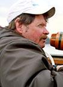

The Offical Homepage
| INFORMATION |
| Home |
| Schedule & Results |
| Roster |
| Coaches |
| Marston Boathouse |
| History |
| Photos |
| Alumnae |
| Parents List |
| Links |
|
 |
Head Coach John Murphy Brown University Box 1932 Providence, RI 02912 (401)863-1060 |
When John Murphy became the Brown women's crew coach at Brown in 1984, his goal was to take the crew program to a higher level of competitiveness and awareness. After 15 years at the helm of the women's crew program, Murphy has led his program to the pinnacle of success, winning the NCAA Championship.
Last season the Bears captured the NCAA Championship Team Title in Eagle Creek, IN. This was the end of a season that included victories in both the Varisty and Junior Varsity boats at the Eastern Sprints Championships and a undefeated dual season. Since 1996, Murphy's crews have put together an incredible 55-3 record, including this year's 9-0 record, and the team has not lost an Ivy regatta since 1997, a string of 21 straight wins.
The previous year, the Bears finished third in the NCAA Championships at Lake Lanier in Gainesville, GA. The team compiled an 11-1 overall record and captured its fourth straight Eastern Championship on Cooper River in Camden, New Jersey.
In 2000, Murphy was named the Division I Rowing Coach of the Year by the CRCA (College Rowing Coaches Association) after his crew captured its second consecutive NCAA Division I Rowing Championship with victories in the varsity and second varsity races at Cooper River. In addition to a second consecutive NCAA title, the Bears' won the 2000 Eastern Sprints title and an Ivy League championship.
In 1999, Murphy led his crew to the the first NCAA Division I Championship in Brown University history after defeating the University of Virginia by a three-second margin at the NCAA Championship at Lake Natoma in Rancho Cordova, California. The Bears' also captured the Eastern Sprints Championships and the Ivy Championship while setting a new course record.
In 1998, Murphy led the Bears to a 7-0 overall record, 4-0 in the Ivies. At the NCAA Women's Rowing National Championship in Gainesville Georgia, the Brown University women's crew finished second in the team competition to the University of Washington. The Bear's varsity eight and second varsity eight finished third, while the varsity four took second place. Brown amassed 85 total points, just six short of Washington's 91 points.
In 1996, Murphy's varsity eight capped off an undefeated season by becoming the first women's crew to capture the "Triple Crown" of collegiate racing - the Eastern Sprints, the IRAs, and the National Collegiate Rowing Championship. Along the way, Murphy was named Eastern Coach of the Year.
Murphy coached the 1994 women's varsity eight to the IRA Championship in Syracuse, New York, and silver medals at the Eastern Sprints. His 1993 crew won the first ever IRA women's championship in Camden, New Jersey.
Murphy's crew won the EAWRC team Championship in 1990 for the first time ever, capturing the Charles G. Willing trophy after winning gold medals in the second varsity and first novice events, silver medals in varsity fours and bronze medals in varsity eights and second novice eights.
In 1988, Murphy was named the EAWRC Coach of the Year after his varsity eight captured the Women's Eastern Sprints Championship for the first time in Brown history after compiling a 6-2 regular record.
Before becoming the Head Coach of the Brown University Women's Crew team, Murphy coached at Cal-Berkeley. He began his coaching career there in 1976 and was responsible for the men's novice crew. He continued to coach the men's novice crew in 1977 and 1978.
In 1979-80, Murphy coached the women's novice crew at the University of Washington with his first novice eight going undefeated in the Pac-10 and claiming the West Coast Championship. Murphy returned to Cal-Berkeley as the novice women's coach in 1980, winning the Pac-10 West Coast Championship in 1981. His 1982 and 1983 crews were both silver medal winners and his 1984 crew were undefeated National Champions, beating the best crews from both coast on Green Lake in Seattle, Washington.
Murphy attended Kent School and Columbia University. At Kent, he captained the National Schoolboy Championship crew and rowed in the Royal Henley Regatta in his junior and senior years.
He and his wife, Phoebe the women's novice coach, have three children, Jack, Patrick and Penelope, and reside in Barrington, Rhode Island.
Novice Coach Phoebe Murphy
Entering her 16th season with the Brown program, Phoebe Murphy has established an outstanding record, with her first eight capturing either gold, silver or bronze medals at the Eastern Sprints in 15 of her 16 seasons.
In 2002, 4 members of Phoebe Murphy's first novice eight competed at the NCAA Championships in the Open 4+, capturing an astounding first place, and leading the Bears to a National Championship.
In 1999, Murphy's first novice crew posted a perfect 10-0 record while the second novice boat compiled an unblemished record of 8-0. Both the first and second novice boats captured the EAWRC Championship. It is no surprise that she was voted the EAWRC novice coach of the year.
A distinguished athlete, Murphy began her career as a single sculler. She captained the Brown crew in 1980 and stroked the varsity four which won the National Championship in Oak Ridge, Tennessee.
Her other accomplishments include a Junior National Championship at age 16, gold medals in the Lightweight single at the Head of the Charles i n 1979 and 1980, and being a member of the United States Lightweight National Team which won gold medals at the U.S. Nationals as well as the Canadian Henley.
Phoebe and her husband, John, the women's varsity coach at Brown, reside in Barrington, Rhode Island with their three children, Jack, Patrick and Penelope.